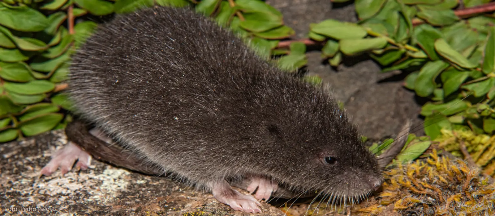
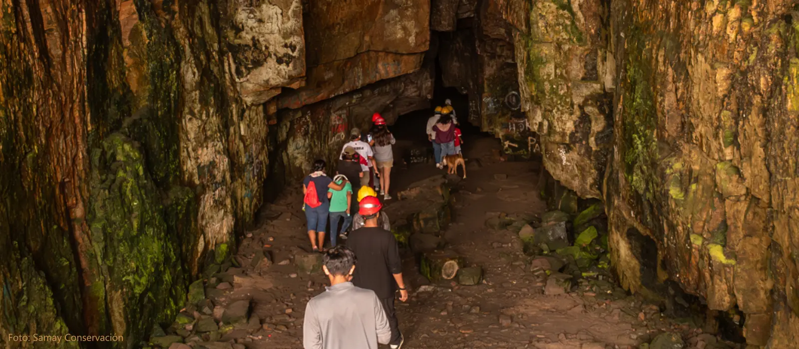
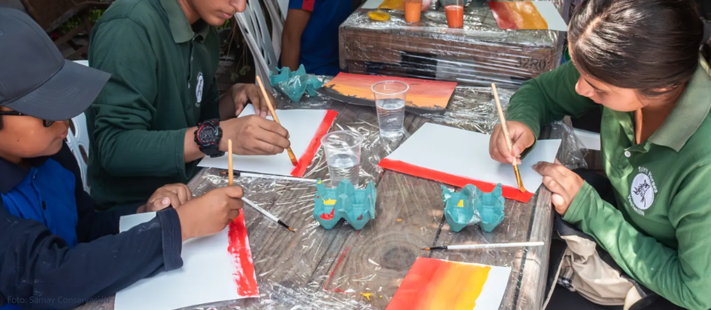

Nuestro enfoque
En Samay Conservación desarrollamos programas que integran investigación científica, educación ambiental y arte comunitario. Nuestro trabajo se basa en comprender los ecosistemas, fortalecer capacidades locales y comunicar la ciencia de manera accesible.
Nuestros proyectos buscan generar impacto positivo en la preservación de hábitats, su biodiversidad y en las comunidades que dependen de ella.

Investigación en Biodiversidad
Documentamos especies, evaluamos su estado de conservación y generamos evidencia científica que permite tomar decisiones informadas para la protección de ecosistemas andinos y amazónicos.

Educación Ambiental
Fortalecemos capacidades locales mediante talleres y actividades participativas que promueven la valoración del territorio y la conservación desde edades tempranas.

Arte y Comunidad
Mediante la ilustración, fotografía y narrativa visual usamos el arte para comunicar la importancia de la biodiversidad y conectar con con las personas, fortaleciendo el impacto de nuestras acciones.